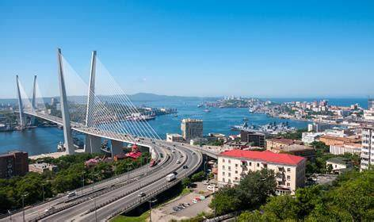

О городе

Владивосток — город на Дальнем Востоке России, расположенный на побережье Японского моря. Это крупный порт, культурный и туристический центр, известный своими сопками, мостами и морепродуктами.
Что вас ждёт на сайте
- Список главных достопримечательностей
- Подборка лучших мест, где можно поесть
- Отзывы туристов
- Планировщик дел для поездки